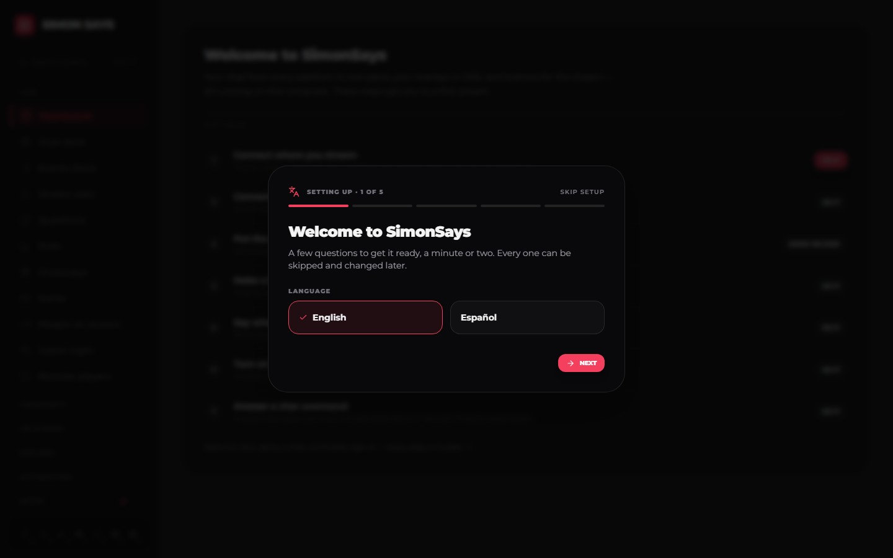
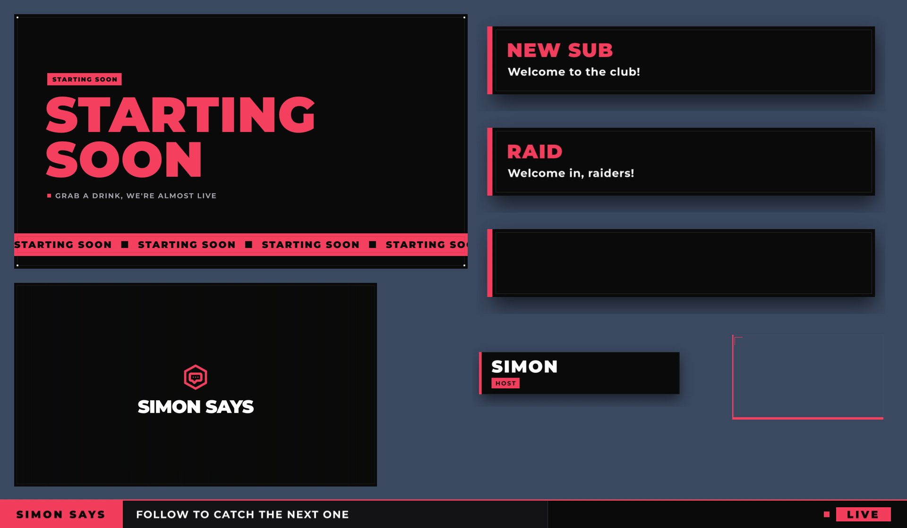
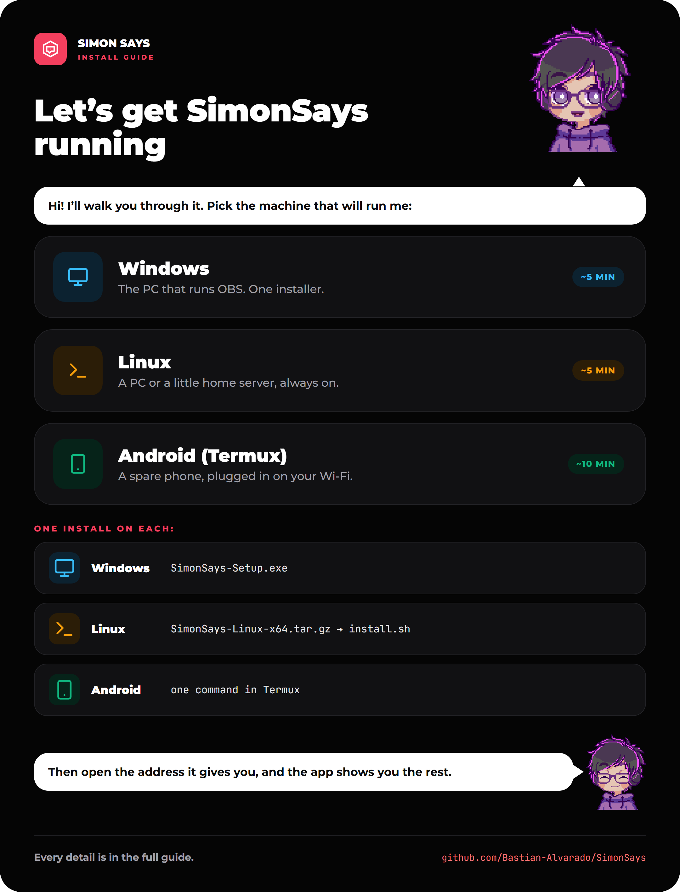
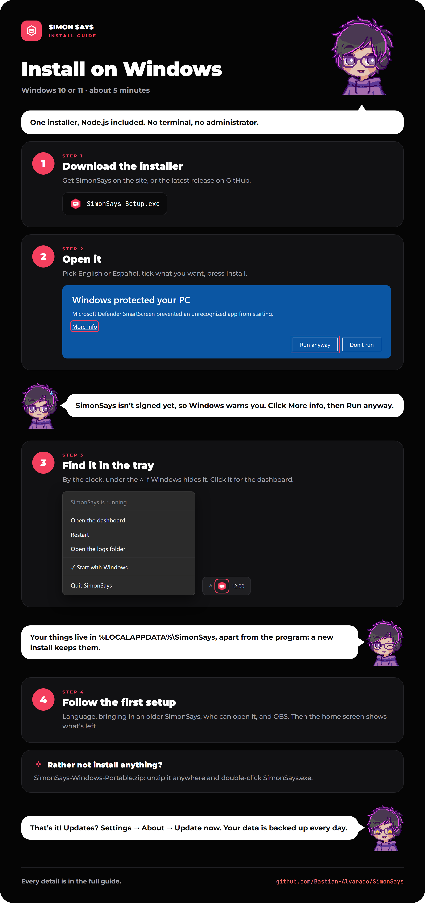
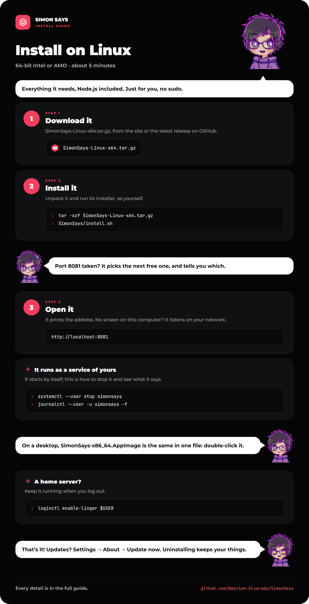
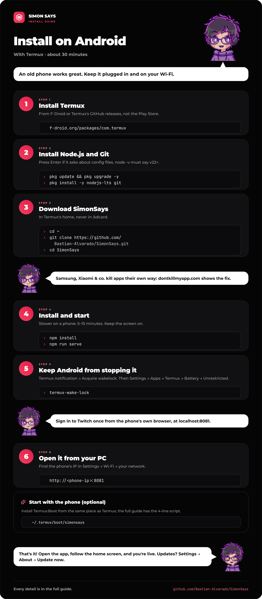
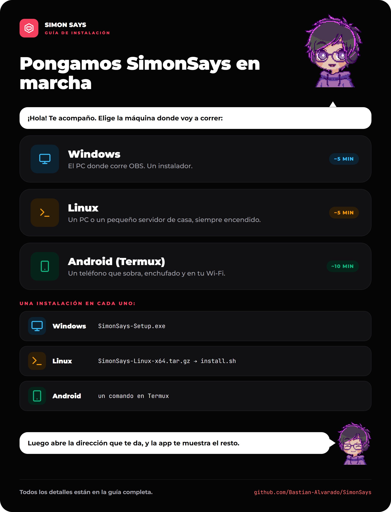
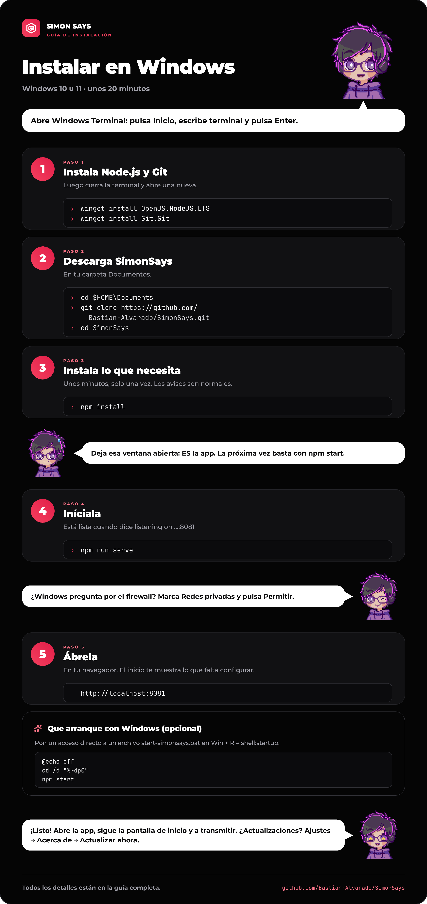
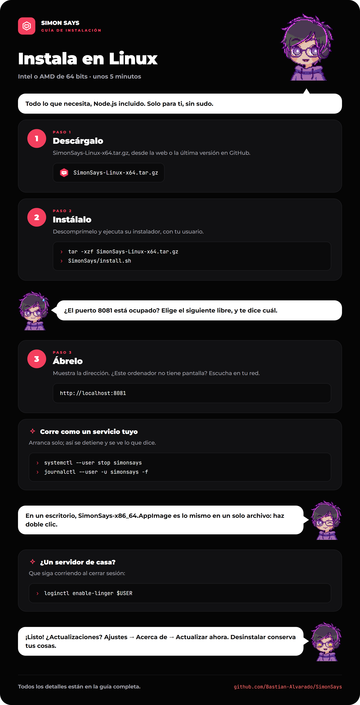
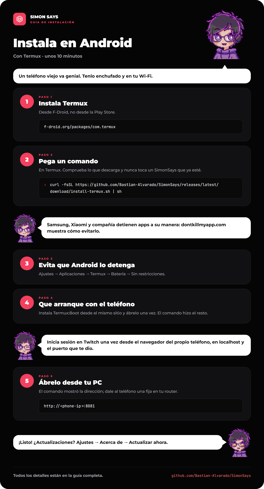

Simon
SimonSays
Stream automation · v3.1.0Automatización de streams · v3.1.0
Twitch, YouTube, TikTok LIVE, Discord, OBS and Spotify, driven by a server you run on your own computer, a spare PC or an old phone. The web app is where you set it up. Close it and everything keeps working.Twitch, YouTube, TikTok LIVE, Discord, OBS y Spotify, movidos por un servidor que corre en tu propia PC, una PC que te sobre o un teléfono viejo. La app web es donde lo configuras. Ciérrala y todo sigue funcionando.
Twitch
YouTube
TikTok LIVE
Discord
OBS
Spotify
Runs without a browser openFunciona sin un navegador abierto
The server owns every connection: Twitch IRC and EventSub, TikTok, the Discord gateway, OBS and Spotify, plus commands, alerts, XP, cooldowns and tags. The config UI, the chat dock and the OBS overlay each connect with one WebSocket, and any of them can close.El servidor se encarga de cada conexión: el IRC y EventSub de Twitch, TikTok, el gateway de Discord, OBS y Spotify, además de comandos, alertas, XP, cooldowns y etiquetas. La configuración, el dock del chat y el overlay de OBS se conectan cada uno con un WebSocket, y cualquiera de ellos se puede cerrar.
Runs onFunciona en
Windows or Linux, a spare PC, or an old Android phoneWindows o Linux, una PC que te sobre o un teléfono Android viejo
Reach it fromÁbrelo desde
Any laptop, phone or tablet on your network, at port 8081Cualquier portátil, teléfono o tablet de tu red, en el puerto 8081
Leave openDeja abierta
Nothing: it runs from the tray, or as a serviceNada: corre desde la bandeja, o como servicio
What it doesQué hace
English and Spanish throughout, and every part works with the others.En inglés y en español de principio a fin, y cada parte funciona con las demás.
Commands, actions with triggers and steps, alerts, and a grid of buttons for your phone or OBS dock.Comandos, acciones con disparadores y pasos, alertas y una cuadrícula de botones para tu teléfono o el dock de OBS.
Chat, alerts, bars, timers, goals, polls and avatars, switched by OBS scene or all in one with Omnilayer.Chat, alertas, barras, temporizadores, metas, encuestas y avatares, que cambian con la escena de OBS o todo en una con Omnilayer.
Drawn in the app, with Sandwichxample as a complete example: faces, extras, hats, outfits and actions.Dibujados en la app, con Sandwichxample como ejemplo completo: caras, extras, sombreros, atuendos y acciones.
Levels, points and a shop, polls, giveaways, questions, game requests and remote players.Niveles, puntos y una tienda, encuestas, sorteos, preguntas, pedidos de juegos y jugadores remotos.
Welcome cards, role menus, pages and go-live posts, from the same server.Tarjetas de bienvenida, menús de roles, páginas y avisos de directo, desde el mismo servidor.
A sign-in for the dashboard, so your Twitch mods help run the stream from their own dock.Un inicio de sesión para el panel, para que tus mods de Twitch ayuden a llevar el stream desde su propio dock.
It greets whoever opens it with the stream at a glance and only what needs doing.Recibe a quien la abre con el stream de un vistazo y solo lo que hace falta hacer.
Every platform's keys, click by click, in English and Spanish.Las claves de cada plataforma, clic a clic, en inglés y en español.
Inside the appDentro de la app
Screens from SimonSays as it opens on a fresh install, before any platform is connected.Pantallas de SimonSays tal como abre en una instalación nueva, antes de conectar ninguna plataforma.

Dashboard: the home screen ticks off the setup steps as you go, each with a button to where it is done.Panel: la pantalla de inicio va marcando los pasos de configuración, cada uno con un botón para ir adonde se hace.
On streamEn el stream
Alerts, bars, name tags, camera frames and starting, BRB and ending screens, in the SimonSays Default theme. Every alert comes in English and Spanish.Alertas, barras, nombres, marcos de cámara y pantallas de inicio, pausa y cierre, con el tema SimonSays Default. Cada alerta viene en inglés y en español.

The Casual overlay kit, made with EffectCraftEl kit de overlays Casual, hecho con EffectCraft
Live alertAlerta en vivo
“Simon dice: ¡gracias por seguir!” A follow alert, as OBS shows it.“Simon dice: ¡gracias por seguir!” Una alerta de follow, tal como la muestra OBS.
Getting startedPara empezar
The app walks you through the rest itself, on its home screen and in Guides.La app te guía en el resto, desde su pantalla de inicio y en Guías.
01
A computer (the one running OBS is simplest) and OBS Studio 28+.Una PC (la que corre OBS es lo más simple) y OBS Studio 28+.
02
SimonSays-Setup.exe on Windows, the Linux download, or one command on an Android phone.SimonSays-Setup.exe en Windows, la descarga para Linux, o un comando en un teléfono Android.
03
Open it, and it installs just for you: no administrator, no terminal.Ábrelo y se instala solo para ti: sin administrador y sin terminal.
SimonSays-Setup.exe
04
It runs from the tray, by the clock. Closing the browser doesn't stop it.Corre desde la bandeja, junto al reloj. Cerrar el navegador no la detiene.
Start → SimonSaysInicio → SimonSays
05
A short first setup, then the home screen walks you through connecting your platforms and OBS.Una configuración inicial corta, y luego la pantalla de inicio te guía para conectar tus plataformas y OBS.
localhost:8081
The full install guideLa guía de instalación completa
Windows, Linux or an Android phone, step by step, in English and Spanish.Windows, Linux o un teléfono Android, paso a paso, en inglés y en español.
Read the install guideLee la guía de instalación
RoadmapHoja de ruta
3.0.0, the easy install update, is out, and 3.1 brought it to Linux and Android phones. These come next, each a major version.La 3.0.0, la actualización de la instalación fácil, ya salió, y la 3.1 la llevó a Linux y a los teléfonos Android. Estas vienen después, cada una una versión mayor.
3.0.0
The easy install updateLa actualización de la instalación fácil
Out now: installers for Windows and Linux, the tray, and one command for Android.Ya salió: instaladores para Windows y Linux, la bandeja y un comando para Android.
4.0.0
The community updateLa actualización de la comunidad
Viewers sign in and get a page of their own: level, points, the shop.Los espectadores inician sesión y tienen su propia página: nivel, puntos, la tienda.
5.0.0
The creators updateLa actualización de los creadores
Share and download themes, layouts, pixel avatars and actions.Comparte y descarga temas, diseños, avatares pixelados y acciones.
6.0.0
The kick updateLa actualización de Kick
Kick joins Twitch, YouTube and TikTok as a supported platform.Kick se suma a Twitch, YouTube y TikTok como plataforma compatible.
7.0.0
The automation updateLa actualización de la automatización
Variables, conditions and queues for actions, and outside triggers.Variables, condiciones y colas para las acciones, y disparadores externos.
8.0.0
The insights updateLa actualización de las estadísticas
Who comes, what holds them, and the best times to go live.Quién viene, qué los retiene y las mejores horas para salir en vivo.
9.0.0
The on-the-go updateLa actualización para llevar
The dashboard as a phone app, made for streams away from the desk.El panel como app para el teléfono, pensado para streams lejos del escritorio.
PrivacyPrivacidad
It runs on your own computer and sends nothing to the people who make it: no analytics and no tracking. Its one cookie is the sign-in's.Corre en tu propia PC y no envía nada a quienes la hacen: sin analíticas ni rastreo. Su única cookie es la del inicio de sesión.
LicenseLicencia
Source available under Apache 2.0 with the Commons Clause. Use it for your own streams, monetized ones included, change it and share it. Don't sell it.Código disponible bajo Apache 2.0 con la Commons Clause. Úsala para tus propios streams, incluso los monetizados, modifícala y compártela. No la vendas.
Simon dice: go live.Simon dice: sal en vivo.
Free to use for your own streams. English and Spanish.Gratis para tus propios streams. En inglés y en español.
Get SimonSays on GitHubSimonSays en GitHub
Simon
SimonSays · Install guideSimonSays · Guía de instalación
A small server you run on your own machine. One download and its installer on Windows and Linux, one command on an Android phone: a few minutes, most of it downloading.Un pequeño servidor que corre en tu propia máquina. Una descarga y su instalador en Windows y Linux, un comando en un teléfono Android: unos minutos, casi todo descargando.
1
Download itDescárgalo
2
Run its installerEjecuta su instalador
3
Open the addressAbre la dirección
4
Follow the first setupSigue la configuración inicial
~5 min
Windows
The PC that runs OBS. One installer, no terminal.El PC donde corre OBS. Un instalador, sin terminal.
~5 min
Linux
A PC, laptop or home server, always on.Un PC, portátil o servidor de casa, siempre encendido.
~10 min
Android
A spare phone with Termux, plugged in on your Wi-Fi.Un teléfono que sobra con Termux, enchufado y en tu Wi-Fi.
SimonSays is a small server you run on your own machine. On Windows and Linux, a download and its installer do it all; on an Android phone, one command. By hand it is four moves everywhere: get Node.js 22 or newer, download the app, run npm install, then run npm run serve. Plan on 15 to 30 minutes the first time, most of it waiting for downloads.
| Windows | Linux | Android (Termux) | |
|---|---|---|---|
| Best for | The PC that runs OBS | A PC, laptop or home server, desktop or headless | A spare phone left on, plugged in |
| Terminal | Windows Terminal or PowerShell | Any shell | The Termux app |
| Node.js from | nodejs.org installer or winget | Your distro, NodeSource or nvm | pkg install nodejs-lts |
| Starts with the computer | Startup folder (optional) | systemd service (optional) | Termux:Boot (optional) |
| Watch out for | Firewall prompt on first use | Firewall (ufw or firewalld) | Android killing apps in the background |
The simplest setup runs SimonSays on the same PC as OBS. Any other machine on your home network works too: OBS then points at that machine's address instead of localhost.
node -v.npm run serve or npm start. It is the app. Closing it stops SimonSays; closing the browser does not. Installed, there is no such window: it runs from the tray, or as a service.
On Windows 10 or 11, one installer does it all: it brings everything SimonSays needs, Node.js included, and asks for no administrator. Use the PC that runs OBS unless you have a reason not to.
Download SimonSays-Setup.exe, the latest release.
Windows protected your PC? The installer is not signed yet, so SmartScreen does not know it. Click More info, then Run anyway.
Pick English or Español: SimonSays starts in that language. Tick a desktop icon or Start SimonSays when I sign in to Windows if you want them, then Install. It goes in your own user folder, so nothing asks for an administrator.
SimonSays runs from an icon by the clock (under the ^ if Windows hides it). Click it to open the dashboard; right-click it to restart, open the logs folder, start it with Windows, or quit. Closing the browser does not stop it.
Your data, pictures, settings and backups are kept in %LOCALAPPDATA%\SimonSays, apart from the program: installing a newer one over it, or uninstalling it, keeps them.
The dashboard opens by itself with a short first setup: your language, bringing in a SimonSays you used before, who can open the dashboard, and OBS. Continue at After installing.
Rather run it from source, or keep it in a Git folder? These were the steps before the installer, and still work. Rather not install anything, but no terminal either? SimonSays-Windows-Portable.zip is the installed app unzipped: double-click SimonSays.exe inside.
Open Windows Terminal or PowerShell (press Start, type terminal, press Enter) and run:
winget install OpenJS.NodeJS.LTS
winget install Git.GitNo winget? Download the LTS installer from nodejs.org and Git from git-scm.com, and keep every default.
Close the terminal and open a new one, so it sees the new programs. Then check:
node -v
npm -v
git --versionnode -v must say v22 or higher.
With Git (recommended), this puts the app in Documents\SimonSays:
cd $HOME\Documents
git clone https://github.com/Bastian-Alvarado/SimonSays.git
cd SimonSaysWithout Git: download SimonSays.zip, the latest release. Right-click it, choose Extract All, and move the SimonSays folder somewhere permanent such as Documents. Then open the folder, right-click an empty space and choose Open in Terminal.
Avoid OneDrive-synced folders if you can. Syncing thousands of small files in node_modules slows the install and can lock files mid-update.
In the app folder:
npm installIt installs the server's and the web app's parts in one go, about 300 MB. A few minutes, once. Lines about deprecated packages or vulnerabilities are normal and need nothing from you.
npm run serveThe first run builds the web app (under a minute), then starts the server. It is ready when you see:
listening on http://0.0.0.0:8081
the stack is now live and does not need a browser openLeave this window open. It is the app. Minimise it, but don't close it.
From now on, npm start is enough. Use npm run serve again only after updating with Git, so the web app is rebuilt.
The first time another device connects, Windows asks whether to let Node.js JavaScript Runtime through. Tick Private networks, untick Public, and press Allow. Missed it? Run this in a terminal opened as administrator:
New-NetFirewallRule -DisplayName "SimonSays" -Direction Inbound -Protocol TCP -LocalPort 8081 -Action Allow -Profile PrivateOnly needed for phones, other PCs or OBS on another machine. On the same PC, nothing is blocked.
Make a file called start-simonsays.bat in the app folder with this inside:
@echo off
title SimonSays
cd /d "%~dp0"
npm startPress Win + R, type shell:startup and press Enter. Right-click the .bat file, choose Create shortcut, and move the shortcut into that Startup folder. SimonSays now opens in its own window each time you sign in.
Open http://localhost:8081 in your browser, or run:
curl.exe localhost:8081/api/healthAn answer starting {"ok":true means the server is up. Continue at After installing.
running scripts is disabled on this system (PowerShell blocks npm): run Set-ExecutionPolicy -Scope CurrentUser RemoteSigned once and answer Y. Or use Command Prompt instead.'&&' is not a valid statement separator (Windows PowerShell 5.1): type the commands on separate lines.'node' is not recognized: open a new terminal after installing Node.js. Still failing? Reinstall Node.js and keep Add to PATH ticked.Port 8081 is already in use: SimonSays is already running in another window. Use that one, or close it first.EPERM or EBUSY during npm install: an antivirus or OneDrive is holding a file. Pause syncing, close editors on the folder, and run npm install again.
Any 64-bit Linux from the last few years works, desktop or headless: the download brings everything SimonSays needs, Node.js included, and installs it just for you, with no sudo.
Download SimonSays-Linux-x64.tar.gz (64-bit Intel or AMD). On a desktop, SimonSays-x86_64.AppImage is the same in one file: see below.
Unpack it and run its installer, as yourself:
tar -xzf SimonSays-Linux-x64.tar.gz
SimonSays/install.shIt installs to ~/.local/opt/simonsays, runs as a service of yours that starts by itself, and takes another port when 8081 is in use. On a computer with no screen it listens on your network, so you can open it from another device.
When it is ready it prints the address: http://localhost:8081 on this computer, or the one it shows from another device. Continue at After installing.
systemctl --user stop simonsays # stop it
journalctl --user -u simonsays -f # what it says
~/.local/opt/simonsays/uninstall.sh # remove it (your things are kept)A home server that should keep it running after you log out: loginctl enable-linger $USER.
Download SimonSays-x86_64.AppImage, make it executable (right-click → Properties → Allow executing as program, or chmod +x SimonSays-x86_64.AppImage), and double-click it. It opens a window to stop it from, and the dashboard in your browser. Your things are kept in ~/.local/share/simonsays, so a newer AppImage finds them.
Rather run it from source, or keep it in a Git folder? These were the steps before the download, and still work.
Your distribution's own Node.js is often too old, so check first with node -v. Pick the line for your system:
| System | Commands |
|---|---|
| Ubuntu, Debian, Mint, Pop!_OS | curl -fsSL https://deb.nodesource.com/setup_22.x | sudo -E bash - then sudo apt install -y nodejs git |
| Fedora | sudo dnf install nodejs22 git (or nodejs when it is already 22+) |
| Arch, Manjaro, EndeavourOS | sudo pacman -S nodejs npm git |
| openSUSE | sudo zypper install nodejs22 git |
| Any distro, no root needed | nvm, below |
With nvm (installs Node.js in your home folder):
curl -o- https://raw.githubusercontent.com/nvm-sh/nvm/v0.40.3/install.sh | bash
# close and reopen the terminal, then:
nvm install 22
nvm alias default 22Then check: node -v must say v22 or higher.
cd ~
git clone https://github.com/Bastian-Alvarado/SimonSays.git
cd SimonSaysNo Git? curl -L -o SimonSays.zip https://github.com/Bastian-Alvarado/SimonSays/releases/latest/download/SimonSays.zip, then unzip SimonSays.zip && cd SimonSays.
npm install
npm run serveNever run these with sudo. Files created as root break later installs and updates. When you see listening on http://0.0.0.0:8081, the app is running. Leave that terminal open, or set up the service below.
After the first time, start it with npm start.
Most desktops have no firewall on by default. If yours does:
# Ubuntu and friends (ufw)
sudo ufw allow 8081/tcp
# Fedora, openSUSE (firewalld)
sudo firewall-cmd --add-port=8081/tcp --permanent
sudo firewall-cmd --reloadA systemd user service starts SimonSays when the machine boots, restarts it if it crashes, and keeps it running after you log out. First find your Node.js path:
which nodeCreate ~/.config/systemd/user/simonsays.service, putting that path after ExecStart=:
[Unit]
Description=SimonSays stream automation
After=network-online.target
Wants=network-online.target
[Service]
WorkingDirectory=%h/SimonSays
ExecStart=/usr/bin/node start.js
Restart=on-failure
RestartSec=5
[Install]
WantedBy=default.targetThen turn it on:
systemctl --user daemon-reload
systemctl --user enable --now simonsays
sudo loginctl enable-linger $USER # keeps it running when you are logged outUseful afterwards:
systemctl --user status simonsays # is it running?
journalctl --user -u simonsays -f # live log (Ctrl+C to leave)
systemctl --user restart simonsays # after editing .envnode start.js is exactly what npm start runs. The built-in updater restarts the app by itself, so the service needs no changes when you update from Settings.
No systemd, or just want it in the background? tmux new -s simonsays, run npm start, then press Ctrl+B then D to leave it running. tmux attach -t simonsays brings it back.
curl localhost:8081/api/healthAn answer starting {"ok":true means it is up. Continue at After installing.
PORT= in ~/.local/share/simonsays/.env and run install.sh again.EACCES: permission denied during npm install: the folder or ~/.npm was touched by sudo. Fix with sudo chown -R $USER: ~/SimonSays ~/.npm and run it again without sudo.SyntaxError or Unsupported engine on start: Node.js is older than 22. With nvm, nvm use 22; under systemd, check the ExecStart path points at the new Node.node: systemd doesn't load your shell's PATH. Use the full path from which node in ExecStart.EADDRINUSE / port 8081 in use: another copy is running (systemctl --user stop simonsays), or set PORT= in .env.web/dist folder over.
An old Android phone on your Wi-Fi can run SimonSays all stream long, while OBS runs on your PC. Termux gives the phone a Linux terminal; the app runs there unchanged. Every native part the app uses (esbuild, Rollup, resvg) ships a ready-made Android ARM build, so nothing is compiled on the phone. The hard part is keeping Android from closing Termux in the background, and steps 4 and 5 deal with that.
You need Android 7 or newer, about 1 GB free, and the phone on the same network as the PC that runs OBS. A 64-bit phone (almost every phone since 2017) is best. Keep it plugged in.
Get Termux from F-Droid or the project's GitHub releases (the arm64-v8a APK for most phones). Android asks you to allow installing apps from that source; allow it.
Don't mix sources: Termux and its add-ons (Termux:Boot, Termux:API) must all come from the same place, or they won't work together.
Open Termux and paste:
curl -fsSL https://github.com/Bastian-Alvarado/SimonSays/releases/latest/download/install-termux.sh | shIt installs Node.js if the phone has none, downloads the latest release and checks it, takes a port of its own, and starts SimonSays: a few minutes. It never touches a SimonSays already on the phone; for a second copy, put SIMONSAYS_DIR=~/another-folder before sh.
Open Settings → Wi-Fi, tap your network, and note the IP address, such as 192.168.1.42. You'll use it on the PC:
http://192.168.1.42:8081http://192.168.1.42:8081/?mode=canvashttp://192.168.1.42:8081/?mode=dockIn your router's settings, give the phone a fixed (reserved) address so it stays the same after a restart. Otherwise OBS loses the app whenever the address changes.
Android closes background apps to save battery. Do all of these:
termux-wake-lock. The CPU then stays awake with the screen off.adb shell device_config put activity_manager max_phantom_processes 2147483647.Install Termux:Boot from the same place as Termux and open it once: the command already left SimonSays's start-up in ~/.termux/boot.
Twitch only accepts a plain http:// sign-in address for localhost. Do the Twitch sign-in once in the phone's own browser at http://localhost:8081, with http://localhost:8081/ as the redirect URL in your Twitch app. Every other device then shares that sign-in. The rest of the setup can be done from the PC.
In OBS (on the PC): Tools → WebSocket Server Settings, tick Enable WebSocket server, and press Show Connect Info. On the app's Connections screen, use the PC's IP address (not localhost), port 4455 and that password. If Windows asks, allow OBS through the firewall on private networks.
Rather set it up by hand, or with Git? These were the steps before the one command, and still work.
Open Termux and run:
pkg update && pkg upgrade -y
pkg install -y nodejs-lts git
node -vPress Enter to accept the default when it asks about config files. node -v must say v22 or higher; if nodejs-lts is older, run pkg install nodejs instead (the current release).
cd ~
git clone https://github.com/Bastian-Alvarado/SimonSays.git
cd SimonSaysKeep it in Termux's home folder (~). Your phone's shared storage (/sdcard, Downloads) doesn't allow the links and permissions node_modules needs, and installing there fails.
npm install
npm run serveOn a phone this takes longer than on a PC: allow 5 to 15 minutes for npm install and a few minutes for the first build. Keep the screen on and Termux in front while it runs. When you see listening on http://0.0.0.0:8081, it's running.
After the first time, npm start is enough.
Run the app inside tmux, so it survives Termux's window being closed by mistake:
pkg install -y tmux
tmux new -s simonsays
cd ~/SimonSays && npm startPress Ctrl+B then D to leave it running (Termux's extra-keys row has CTRL). tmux attach -t simonsays brings it back.
Install Termux:Boot from the same place as Termux and open it once. Then in Termux:
mkdir -p ~/.termux/boot
cat > ~/.termux/boot/simonsays <<'EOF'
#!/data/data/com.termux/files/usr/bin/sh
termux-wake-lock
cd ~/SimonSays
npm start > ~/simonsays.log 2>&1
EOF
chmod +x ~/.termux/boot/simonsaysAfter a restart, SimonSays comes up on its own. tail -f ~/simonsays.log shows its log.
Repository is under maintenance or down: run termux-change-repo, pick a mirror near you, then pkg update again.CANNOT LINK EXECUTABLE or library errors after an update: run pkg upgrade -y. Termux needs all its packages at the same level.npm install fails on /sdcard with EPERM or symlink: the app is in shared storage. Move it to ~ (the manual way).[Process completed (signal 9)]: Android's phantom process killer. See step 4.4.npm run build again. Or build on a PC and copy the web/dist folder into the phone's ~/SimonSays/web/.
The rest of the setup happens in the app, the same on every system. Its home screen lists the steps still to do and ticks them off. Guides → Start here has click-by-click walkthroughs for each platform, in English and Spanish.
http://localhost:8081 on the machine running it, or http://<its-ip>:8081 from another device.http://localhost:8081/; category Chat Bot.localhost (or the OBS PC's IP), port 4455, and the password.http://localhost:8081/?mode=canvas). It draws everything: chat, alerts, bars, timers and avatars.http://localhost:8081/?mode=dock.Once sign-in is on, copy OBS's addresses again from the app: they then carry the page key OBS needs.
Everything can be set in the app. To set the port, the listening address or keys in a file instead, copy the example into the app folder and edit it:
cp server/.env.example .env # Windows: copy server\.env.example .envLines left blank are ignored, and real environment variables win over the file (PORT=9000 npm start). Restart the app after editing. The most useful lines:
| Setting | Default | What it does |
|---|---|---|
PORT | 8081 | The port everything is served on. Change it and update every OBS address and your Twitch redirect URL. |
HOST | 0.0.0.0 | 0.0.0.0 lets other devices on the network in; 127.0.0.1 keeps it to this machine only. |
DATA_DIR | data | Where your commands, alerts, XP and settings are kept. |
ASSETS_DIR | assets | Where uploaded sounds and pictures are kept. |
AUTO_START | true | Reconnects your platforms on start-up. |
OBS_HOST, OBS_PORT, OBS_PASSWORD | localhost, 4455, empty | The OBS connection, if you'd rather not type it in the app. |
LOG_LEVEL | info | debug for more detail when something misbehaves. |
Keep .env in the app folder itself, not inside server/. Updates never touch it there.
The app updates itself on every system. It checks GitHub once a day, and Settings → About shows when a new version is out, with what's new. Update now downloads it, checks it arrived whole, backs up data/ to backups/, and restarts into it in a few seconds. If the new version won't start, it goes back to the one you had. It never updates on its own, and never while OBS is streaming or recording.
Your data is also backed up every day and before every update: Settings → Data Management → Automatic backups lists the backups, the newest seven of each kind, and puts any of them back.
Installed copies (Windows and Linux) take a package made for them, with everything in it; a copy started with npm start or npm run serve installs what changed with npm. npm run dev has no updater.
Prefer Git? From the app folder:
git pull
npm install
npm run serveA newer copy from Git wins over an older version installed from Settings.
Everything that is yours lives in one folder: %LOCALAPPDATA%\SimonSays installed on Windows, ~/.local/share/simonsays installed on Linux or with the AppImage, and the app folder itself for Termux, Git and zip copies. In it:
| Path | Holds |
|---|---|
data/ | Commands, actions, alerts, layouts, XP, connections and every setting |
assets/ | Sounds, pictures and fonts you uploaded |
.env | Your file settings, if you made one |
The app can also export its configuration as one file from Settings → Export Configuration. To move to another machine, install SimonSays there, stop it, copy those three in, and start it. On the same machine, from a Git or zip copy to an installed one: Settings → About → Bring in my existing SimonSays copies it all in.
~/.local/opt/simonsays/uninstall.sh (add --purge to delete your data too). The AppImage: delete the file.kill $(cat ~/SimonSays/simonsays.pid), delete ~/.termux/boot/simonsays-SimonSays, then the SimonSays folder.systemctl --user disable --now simonsays for a service you made yourself, or tmux kill-session -t simonsays in Termux; remove what starts it; back up data/ and assets/ if you might come back, then delete the app folder.| What you see | What to do |
|---|---|
node -v shows v20 or older | Install Node.js 22+ (the manual way in your system's section), then open a new terminal |
The browser can't reach localhost:8081 | Is SimonSays running: its tray icon on Windows, systemctl --user status simonsays on Linux, the server window by hand? On Linux and Android, the install takes the next free port when 8081 is in use, and says which. |
A phone or PC can't reach it, but localhost works | The firewall (Allow it through the firewall on Windows, Open the firewall on Linux), or HOST=127.0.0.1 in .env. Both devices must be on the same network |
Twitch says redirect_mismatch | The redirect URL in your Twitch app must be exactly the address you opened, slash included: http://localhost:8081/ |
| OBS shows a blank or old overlay | Right-click the source, Refresh cache of current page. After switching on sign-in, copy the address again from the app |
The UI looks out of date after git pull | Run npm run serve (not npm start) once to rebuild it |
the server stopped 6 times in two minutes; not starting it again | The app is crashing on start. Run npm start in a terminal and read the lines just above that message |
| Anything else | Guides in the app has a when it doesn't work list for every platform |
SimonSays es un pequeño servidor que corre en tu propia máquina. En Windows y Linux, una descarga y su instalador lo hacen todo; en un teléfono Android, un comando. A mano son cuatro pasos en todas partes: tener Node.js 22 o más nuevo, descargar la app, ejecutar npm install y luego npm run serve. Calcula entre 15 y 30 minutos la primera vez, casi todo esperando descargas.
| Windows | Linux | Android (Termux) | |
|---|---|---|---|
| Ideal para | El PC donde corre OBS | Un PC, portátil o servidor de casa, con o sin escritorio | Un teléfono que sobra, siempre enchufado |
| Terminal | Windows Terminal o PowerShell | Cualquier shell | La app Termux |
| Node.js desde | El instalador de nodejs.org o winget | Tu distro, NodeSource o nvm | pkg install nodejs-lts |
| Arranca con el equipo | Carpeta de inicio (opcional) | Servicio de systemd (opcional) | Termux:Boot (opcional) |
| Ojo con | El aviso del firewall la primera vez | El firewall (ufw o firewalld) | Android cerrando apps en segundo plano |
Lo más simple es correr SimonSays en el mismo PC que OBS. Cualquier otra máquina de tu red sirve igual: OBS apunta entonces a la dirección de esa máquina en vez de a localhost.
node -v.npm run serve o npm start. Esa ventana es la app. Si la cierras, SimonSays se detiene; si cierras el navegador, no. Instalada, no hay tal ventana: corre desde la bandeja, o como servicio.
En Windows 10 u 11, un instalador lo hace todo: trae todo lo que SimonSays necesita, Node.js incluido, y no pide administrador. Usa el PC que corre OBS salvo que tengas un motivo para no hacerlo.
Descarga SimonSays-Setup.exe, la última versión.
¿Windows protegió tu equipo? El instalador aún no está firmado, así que SmartScreen no lo conoce. Haz clic en Más información y luego en Ejecutar de todas formas.
Elige English o Español: SimonSays empieza en ese idioma. Marca un icono en el escritorio o Iniciar SimonSays al iniciar sesión en Windows si los quieres, y luego Instalar. Se instala en tu propia carpeta de usuario, así que nada pide administrador.
SimonSays corre desde un icono junto al reloj (bajo la ^ si Windows lo oculta). Haz clic para abrir el panel; clic derecho para reiniciarlo, abrir la carpeta de registros, iniciarlo con Windows o salir. Cerrar el navegador no lo detiene.
Tus datos, imágenes, ajustes y respaldos se guardan en %LOCALAPPDATA%\SimonSays, aparte del programa: instalar uno más nuevo encima, o desinstalarlo, los conserva.
El panel se abre solo con una configuración inicial corta: tu idioma, traer un SimonSays que usabas antes, quién puede abrir el panel, y OBS. Sigue en Después de instalar.
¿Prefieres correrlo desde el código, o tenerlo en una carpeta de Git? Estos eran los pasos antes del instalador, y siguen funcionando. ¿Sin instalar nada, pero tampoco con terminal? SimonSays-Windows-Portable.zip es la app instalada, descomprimida: haz doble clic en SimonSays.exe dentro.
Abre Windows Terminal o PowerShell (pulsa Inicio, escribe terminal y pulsa Enter) y ejecuta:
winget install OpenJS.NodeJS.LTS
winget install Git.Git¿No tienes winget? Descarga el instalador LTS de nodejs.org y Git de git-scm.com, y deja todas las opciones por defecto.
Cierra la terminal y abre una nueva, para que vea los programas nuevos. Luego comprueba:
node -v
npm -v
git --versionnode -v tiene que decir v22 o más.
Con Git (recomendado), esto deja la app en Documentos\SimonSays:
cd $HOME\Documents
git clone https://github.com/Bastian-Alvarado/SimonSays.git
cd SimonSaysSin Git: descarga SimonSays.zip, la última versión. Haz clic derecho en él, elige Extraer todo y mueve la carpeta SimonSays a un lugar fijo como Documentos. Luego abre la carpeta, haz clic derecho en un espacio vacío y elige Abrir en Terminal.
Si puedes, evita las carpetas sincronizadas con OneDrive. Sincronizar miles de archivos pequeños de node_modules hace lenta la instalación y puede bloquear archivos en medio de una actualización.
En la carpeta de la app:
npm installInstala de una vez las partes del servidor y de la app web, unos 300 MB. Unos minutos, solo una vez. Los mensajes sobre paquetes deprecated o vulnerabilities son normales y no tienes que hacer nada.
npm run serveLa primera vez construye la app web (menos de un minuto) y luego inicia el servidor. Está lista cuando ves:
listening on http://0.0.0.0:8081
the stack is now live and does not need a browser openDeja esta ventana abierta. Es la app. Puedes minimizarla, pero no cerrarla.
De aquí en adelante basta con npm start. Vuelve a usar npm run serve solo después de actualizar con Git, para que la app web se reconstruya.
La primera vez que otro dispositivo se conecte, Windows pregunta si deja pasar a Node.js JavaScript Runtime. Marca Redes privadas, desmarca Públicas y pulsa Permitir. ¿Te lo saltaste? Ejecuta esto en una terminal abierta como administrador:
New-NetFirewallRule -DisplayName "SimonSays" -Direction Inbound -Protocol TCP -LocalPort 8081 -Action Allow -Profile PrivateSolo hace falta para teléfonos, otros PC u OBS en otra máquina. En el mismo PC no se bloquea nada.
Crea un archivo llamado start-simonsays.bat en la carpeta de la app con esto dentro:
@echo off
title SimonSays
cd /d "%~dp0"
npm startPulsa Win + R, escribe shell:startup y pulsa Enter. Haz clic derecho en el .bat, elige Crear acceso directo y mueve el acceso directo a esa carpeta de Inicio. Ahora SimonSays se abre en su propia ventana cada vez que inicias sesión.
Abre http://localhost:8081 en tu navegador, o ejecuta:
curl.exe localhost:8081/api/healthUna respuesta que empieza con {"ok":true significa que el servidor está funcionando. Sigue en Después de instalar.
running scripts is disabled on this system (PowerShell bloquea npm): ejecuta una vez Set-ExecutionPolicy -Scope CurrentUser RemoteSigned y responde S (o Y). O usa el Símbolo del sistema en su lugar.'&&' is not a valid statement separator (Windows PowerShell 5.1): escribe los comandos en líneas separadas.'node' is not recognized: abre una terminal nueva después de instalar Node.js. ¿Sigue fallando? Reinstala Node.js con Add to PATH marcado.Port 8081 is already in use: SimonSays ya está corriendo en otra ventana. Usa esa, o ciérrala primero.EPERM o EBUSY durante npm install: un antivirus u OneDrive tiene un archivo tomado. Pausa la sincronización, cierra los editores abiertos en la carpeta y vuelve a ejecutar npm install.
Sirve cualquier Linux de 64 bits de los últimos años, con escritorio o sin él: la descarga trae todo lo que SimonSays necesita, Node.js incluido, y lo instala solo para ti, sin sudo.
Descarga SimonSays-Linux-x64.tar.gz (Intel o AMD de 64 bits). En un escritorio, SimonSays-x86_64.AppImage es lo mismo en un solo archivo: mira más abajo.
Descomprímelo y ejecuta su instalador, con tu usuario:
tar -xzf SimonSays-Linux-x64.tar.gz
SimonSays/install.shSe instala en ~/.local/opt/simonsays, corre como un servicio tuyo que arranca solo y usa otro puerto si el 8081 está ocupado. En un ordenador sin pantalla escucha en tu red, para que lo abras desde otro dispositivo.
Cuando está listo muestra la dirección: http://localhost:8081 en este ordenador, o la que indica desde otro dispositivo. Sigue en Después de instalar.
systemctl --user stop simonsays # detenerlo
journalctl --user -u simonsays -f # lo que dice
~/.local/opt/simonsays/uninstall.sh # quitarlo (tus cosas se conservan)Un servidor de casa que debe seguir corriendo al cerrar sesión: loginctl enable-linger $USER.
Descarga SimonSays-x86_64.AppImage, hazla ejecutable (clic derecho → Propiedades → Permitir ejecutar como programa, o chmod +x SimonSays-x86_64.AppImage) y haz doble clic. Abre una ventana desde la que detenerlo, y el panel en tu navegador. Tus cosas se guardan en ~/.local/share/simonsays, así que una AppImage más nueva las encuentra.
¿Prefieres correrlo desde el código, o tenerlo en una carpeta de Git? Estos eran los pasos antes de la descarga, y siguen funcionando.
El Node.js de tu distribución suele ser demasiado antiguo, así que primero revisa con node -v. Elige la línea de tu sistema:
| Sistema | Comandos |
|---|---|
| Ubuntu, Debian, Mint, Pop!_OS | curl -fsSL https://deb.nodesource.com/setup_22.x | sudo -E bash - y luego sudo apt install -y nodejs git |
| Fedora | sudo dnf install nodejs22 git (o nodejs si ya es 22+) |
| Arch, Manjaro, EndeavourOS | sudo pacman -S nodejs npm git |
| openSUSE | sudo zypper install nodejs22 git |
| Cualquier distro, sin root | nvm, abajo |
Con nvm (instala Node.js en tu carpeta personal):
curl -o- https://raw.githubusercontent.com/nvm-sh/nvm/v0.40.3/install.sh | bash
# cierra y vuelve a abrir la terminal, luego:
nvm install 22
nvm alias default 22Luego comprueba: node -v tiene que decir v22 o más.
cd ~
git clone https://github.com/Bastian-Alvarado/SimonSays.git
cd SimonSays¿Sin Git? curl -L -o SimonSays.zip https://github.com/Bastian-Alvarado/SimonSays/releases/latest/download/SimonSays.zip, y luego unzip SimonSays.zip && cd SimonSays.
npm install
npm run serveNunca los ejecutes con sudo. Los archivos creados como root rompen las instalaciones y actualizaciones posteriores. Cuando veas listening on http://0.0.0.0:8081, la app está corriendo. Deja esa terminal abierta, o configura el servicio de más abajo.
Después de la primera vez, iníciala con npm start.
La mayoría de los escritorios no traen el firewall activado. Si el tuyo sí:
# Ubuntu y derivados (ufw)
sudo ufw allow 8081/tcp
# Fedora, openSUSE (firewalld)
sudo firewall-cmd --add-port=8081/tcp --permanent
sudo firewall-cmd --reloadUn servicio de usuario de systemd inicia SimonSays al arrancar la máquina, lo reinicia si se cae y lo mantiene corriendo aunque cierres sesión. Primero busca la ruta de Node.js:
which nodeCrea ~/.config/systemd/user/simonsays.service y pon esa ruta después de ExecStart=:
[Unit]
Description=SimonSays stream automation
After=network-online.target
Wants=network-online.target
[Service]
WorkingDirectory=%h/SimonSays
ExecStart=/usr/bin/node start.js
Restart=on-failure
RestartSec=5
[Install]
WantedBy=default.targetLuego actívalo:
systemctl --user daemon-reload
systemctl --user enable --now simonsays
sudo loginctl enable-linger $USER # sigue corriendo aunque cierres sesiónÚtil después:
systemctl --user status simonsays # ¿está corriendo?
journalctl --user -u simonsays -f # registro en vivo (Ctrl+C para salir)
systemctl --user restart simonsays # después de editar .envnode start.js es exactamente lo que ejecuta npm start. El actualizador integrado reinicia la app por sí mismo, así que el servicio no necesita cambios cuando actualizas desde Ajustes.
¿Sin systemd, o solo lo quieres en segundo plano? tmux new -s simonsays, ejecuta npm start y pulsa Ctrl+B y luego D para dejarlo corriendo. tmux attach -t simonsays lo trae de vuelta.
curl localhost:8081/api/healthUna respuesta que empieza con {"ok":true significa que está funcionando. Sigue en Después de instalar.
PORT= en ~/.local/share/simonsays/.env y vuelve a ejecutar install.sh.EACCES: permission denied durante npm install: la carpeta o ~/.npm se tocaron con sudo. Arréglalo con sudo chown -R $USER: ~/SimonSays ~/.npm y vuelve a ejecutarlo sin sudo.SyntaxError o Unsupported engine al iniciar: Node.js es anterior a 22. Con nvm, nvm use 22; con systemd, revisa que la ruta de ExecStart apunte al Node nuevo.node: systemd no carga el PATH de tu shell. Usa la ruta completa de which node en ExecStart.EADDRINUSE / el puerto 8081 está en uso: hay otra copia corriendo (systemctl --user stop simonsays), o define PORT= en .env.web/dist.
Un teléfono Android antiguo conectado a tu Wi-Fi puede correr SimonSays todo el directo, mientras OBS corre en tu PC. Termux le da al teléfono una terminal de Linux, y la app corre ahí sin cambios. Todas las partes nativas que usa la app (esbuild, Rollup, resvg) traen una versión lista para Android ARM, así que no se compila nada en el teléfono. Lo difícil es evitar que Android cierre Termux en segundo plano, y de eso se encargan los pasos 4 y 5.
Necesitas Android 7 o más nuevo, alrededor de 1 GB libre, y el teléfono en la misma red que el PC donde corre OBS. Lo mejor es un teléfono de 64 bits (casi todos desde 2017). Déjalo enchufado.
Descarga Termux desde F-Droid o desde las versiones en GitHub del proyecto (el APK arm64-v8a para la mayoría de los teléfonos). Android te pedirá permitir instalar apps desde ese origen; permítelo.
No mezcles orígenes: Termux y sus complementos (Termux:Boot, Termux:API) tienen que venir todos del mismo lugar, o no funcionan juntos.
Abre Termux y pega:
curl -fsSL https://github.com/Bastian-Alvarado/SimonSays/releases/latest/download/install-termux.sh | shInstala Node.js si el teléfono no lo tiene, descarga la última versión y la comprueba, usa un puerto propio e inicia SimonSays: unos minutos. Nunca toca un SimonSays que ya esté en el teléfono; para una segunda copia, pon SIMONSAYS_DIR=~/otra-carpeta antes de sh.
Abre Ajustes → Wi-Fi, toca tu red y anota la dirección IP, por ejemplo 192.168.1.42. La usarás en el PC:
http://192.168.1.42:8081http://192.168.1.42:8081/?mode=canvashttp://192.168.1.42:8081/?mode=dockEn la configuración de tu router, dale al teléfono una dirección fija (reservada) para que no cambie después de un reinicio. Si no, OBS pierde la app cada vez que cambia la dirección.
Android cierra las apps en segundo plano para ahorrar batería. Haz todo esto:
termux-wake-lock. Así el procesador sigue despierto con la pantalla apagada.adb shell device_config put activity_manager max_phantom_processes 2147483647.Instala Termux:Boot desde el mismo sitio que Termux y ábrelo una vez: el comando ya dejó el arranque de SimonSays en ~/.termux/boot.
Twitch solo acepta una dirección http:// simple para localhost. Inicia sesión en Twitch una vez desde el navegador del propio teléfono en http://localhost:8081, con http://localhost:8081/ como URL de redirección en tu app de Twitch. Todos los demás dispositivos comparten esa sesión. El resto de la configuración puedes hacerla desde el PC.
En OBS (en el PC): Herramientas → Configuración del servidor WebSocket (Tools → WebSocket Server Settings), marca Habilitar servidor WebSocket y pulsa Mostrar información de conexión. En la pantalla Conexiones de la app, usa la dirección IP del PC (no localhost), el puerto 4455 y esa contraseña. Si Windows pregunta, permite OBS en el firewall para redes privadas.
¿Prefieres hacerlo a mano, o con Git? Estos eran los pasos antes del comando, y siguen funcionando.
Abre Termux y ejecuta:
pkg update && pkg upgrade -y
pkg install -y nodejs-lts git
node -vPulsa Enter para aceptar la opción por defecto cuando pregunte por archivos de configuración. node -v tiene que decir v22 o más; si nodejs-lts es más antiguo, ejecuta pkg install nodejs (la versión actual).
cd ~
git clone https://github.com/Bastian-Alvarado/SimonSays.git
cd SimonSaysDéjalo en la carpeta personal de Termux (~). El almacenamiento compartido del teléfono (/sdcard, Descargas) no permite los enlaces y permisos que necesita node_modules, y la instalación falla ahí.
npm install
npm run serveEn un teléfono tarda más que en un PC: calcula entre 5 y 15 minutos para npm install y algunos minutos para la primera compilación. Mantén la pantalla encendida y Termux al frente mientras corre. Cuando veas listening on http://0.0.0.0:8081, está funcionando.
Después de la primera vez, basta con npm start.
Corre la app dentro de tmux, para que sobreviva si cierras la ventana de Termux por error:
pkg install -y tmux
tmux new -s simonsays
cd ~/SimonSays && npm startPulsa Ctrl+B y luego D para dejarla corriendo (la fila de teclas extra de Termux tiene CTRL). tmux attach -t simonsays la trae de vuelta.
Instala Termux:Boot desde el mismo lugar que Termux y ábrelo una vez. Luego, en Termux:
mkdir -p ~/.termux/boot
cat > ~/.termux/boot/simonsays <<'EOF'
#!/data/data/com.termux/files/usr/bin/sh
termux-wake-lock
cd ~/SimonSays
npm start > ~/simonsays.log 2>&1
EOF
chmod +x ~/.termux/boot/simonsaysDespués de un reinicio, SimonSays arranca sola. tail -f ~/simonsays.log muestra su registro.
Repository is under maintenance or down: ejecuta termux-change-repo, elige un espejo cercano y vuelve a ejecutar pkg update.CANNOT LINK EXECUTABLE o errores de bibliotecas después de actualizar: ejecuta pkg upgrade -y. Termux necesita todos sus paquetes al mismo nivel.npm install falla en /sdcard con EPERM o symlink: la app está en el almacenamiento compartido. Muévela a ~ (a mano).[Process completed (signal 9)]: el phantom process killer de Android. Mira el paso 4.4.npm run build. O compila en un PC y copia la carpeta web/dist a ~/SimonSays/web/ en el teléfono.
El resto de la configuración se hace en la app y es igual en todos los sistemas. Su pantalla de inicio muestra los pasos que faltan y los va marcando. Guías → Empieza aquí tiene instrucciones clic a clic para cada plataforma, en español e inglés.
http://localhost:8081 en la máquina donde corre, o a http://<su-ip>:8081 desde otro dispositivo.http://localhost:8081/; categoría Chat Bot.localhost (o la IP del PC con OBS), puerto 4455 y la contraseña.http://localhost:8081/?mode=canvas). Dibuja todo: chat, alertas, barras, temporizadores y avatares.http://localhost:8081/?mode=dock.Con el inicio de sesión activado, vuelve a copiar las direcciones de OBS desde la app: desde entonces llevan la clave de página que OBS necesita.
Todo se puede configurar en la app. Para fijar el puerto, la dirección donde escucha o las claves en un archivo, copia el ejemplo a la carpeta de la app y edítalo:
cp server/.env.example .env # Windows: copy server\.env.example .envLas líneas vacías se ignoran, y las variables de entorno reales ganan sobre el archivo (PORT=9000 npm start). Reinicia la app después de editarlo. Las líneas más útiles:
| Ajuste | Por defecto | Qué hace |
|---|---|---|
PORT | 8081 | El puerto donde se sirve todo. Si lo cambias, actualiza todas las direcciones de OBS y la URL de redirección de Twitch. |
HOST | 0.0.0.0 | 0.0.0.0 deja entrar a otros dispositivos de la red; 127.0.0.1 la limita a esta máquina. |
DATA_DIR | data | Dónde se guardan tus comandos, alertas, XP y ajustes. |
ASSETS_DIR | assets | Dónde se guardan los sonidos e imágenes que subes. |
AUTO_START | true | Vuelve a conectar tus plataformas al iniciar. |
OBS_HOST, OBS_PORT, OBS_PASSWORD | localhost, 4455, vacío | La conexión con OBS, si prefieres no escribirla en la app. |
LOG_LEVEL | info | debug para más detalle cuando algo falla. |
Guarda .env en la carpeta de la app, no dentro de server/. Las actualizaciones nunca lo tocan ahí.
La app se actualiza sola en todos los sistemas. Revisa GitHub una vez al día, y Ajustes → Acerca de muestra cuando hay una versión nueva, con sus novedades. Actualizar ahora la descarga, comprueba que llegó completa, respalda data/ en backups/ y se reinicia en ella en unos segundos. Si la versión nueva no arranca, vuelve a la que tenías. Nunca se actualiza por su cuenta, ni mientras OBS está transmitiendo o grabando.
Tus datos también se respaldan cada día y antes de cada actualización: Ajustes → Gestión de Datos → Respaldos automáticos muestra los respaldos, los siete más recientes de cada tipo, y restaura cualquiera de ellos.
Las copias instaladas (Windows y Linux) toman un paquete hecho para ellas, con todo dentro; una copia iniciada con npm start o npm run serve instala lo que cambió con npm. npm run dev no tiene actualizador.
¿Prefieres Git? Desde la carpeta de la app:
git pull
npm install
npm run serveUna copia más nueva desde Git gana sobre una versión más antigua instalada desde Ajustes.
Todo lo tuyo vive en una carpeta: %LOCALAPPDATA%\SimonSays instalada en Windows, ~/.local/share/simonsays instalada en Linux o con la AppImage, y la propia carpeta de la app en Termux y en copias de Git o zip. Dentro:
| Ruta | Contiene |
|---|---|
data/ | Comandos, acciones, alertas, layouts, XP, conexiones y todos los ajustes |
assets/ | Los sonidos, imágenes y fuentes que subiste |
.env | Tus ajustes en archivo, si creaste uno |
La app también puede exportar su configuración en un archivo desde Ajustes → Exportar configuración. Para pasar a otra máquina, instala SimonSays allí, detenlo, copia esos tres y vuelve a iniciarlo. En la misma máquina, de una copia de Git o zip a una instalada: Ajustes → Acerca de → Traer mi SimonSays de antes lo copia todo.
~/.local/opt/simonsays/uninstall.sh (añade --purge para borrar también tus datos). La AppImage: borra el archivo.kill $(cat ~/SimonSays/simonsays.pid), borra ~/.termux/boot/simonsays-SimonSays y luego la carpeta SimonSays.systemctl --user disable --now simonsays para un servicio que hiciste tú, o tmux kill-session -t simonsays en Termux; quita lo que lo inicia; respalda data/ y assets/ por si vuelves, y borra la carpeta de la app.| Lo que ves | Qué hacer |
|---|---|
node -v muestra v20 o anterior | Instala Node.js 22+ (a mano, en la sección de tu sistema) y abre una terminal nueva |
El navegador no llega a localhost:8081 | ¿Está corriendo SimonSays: su icono en la bandeja en Windows, systemctl --user status simonsays en Linux, la ventana del servidor a mano? En Linux y Android, la instalación toma el siguiente puerto libre cuando el 8081 está ocupado, y te dice cuál. |
Un teléfono u otro PC no llega, pero localhost sí | El firewall (Permítela en el firewall en Windows, Abre el firewall en Linux), o HOST=127.0.0.1 en .env. Ambos dispositivos deben estar en la misma red |
Twitch dice redirect_mismatch | La URL de redirección de tu app de Twitch tiene que ser exactamente la dirección que abriste, con la barra final: http://localhost:8081/ |
| OBS muestra el overlay en blanco o antiguo | Clic derecho en la fuente, Actualizar caché de la página actual. Tras activar el inicio de sesión, copia la dirección otra vez desde la app |
La interfaz se ve antigua después de git pull | Ejecuta npm run serve (no npm start) una vez para reconstruirla |
the server stopped 6 times in two minutes; not starting it again | La app se cae al iniciar. Ejecuta npm start en una terminal y lee las líneas justo encima de ese mensaje |
| Cualquier otra cosa | Guías en la app tiene una lista de cuando no funciona para cada plataforma |